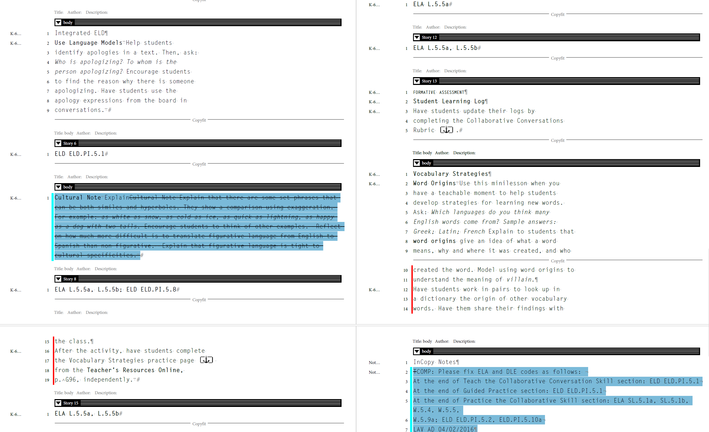
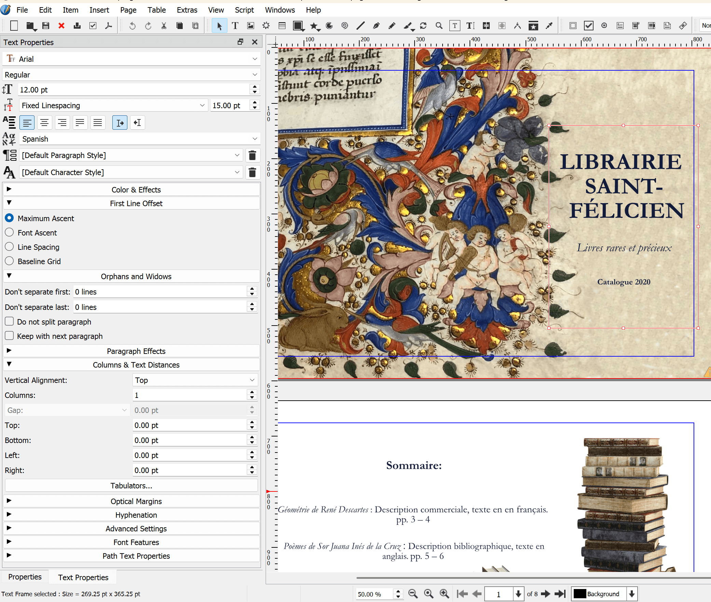

Édition & Mise en Page (PAO)
La conception éditoriale requiert une rigueur absolue dans le traitement du texte et une grande maîtrise des flux de publication (PAO). Mon approche combine les standards professionnels de l'édition internationale avec une forte capacité d'adaptation aux environnements logiciels variés.
Coordination Éditoriale & Flux InCopy
Au sein de School Publishing Group, j'ai assuré la supervision technique et le contrôle qualité pour des projets éditoriaux d'envergure (notamment pour Houghton Mifflin Harcourt). Cette expérience m'a permis de maîtriser les chaînes de production professionnelles :
- Suivi de mise en pages (Adobe InCopy) : Vérification méticuleuse du calibrage et de la conformité visuelle des ouvrages. Utilisation quotidienne d'InCopy pour intégrer des corrections directes de manière sécurisée et guider les maquettistes-graphistes jusqu'à la validation finale.
- Préparation de copie & Démarche qualité : Révision linguistique, stylistique et conceptuelle approfondie des textes. Encadrement du contrôle qualité des productions de l'équipe d'auteurs.
- Conception & Ingénierie Pédagogique : Co-conception de la structure d'ouvrages scolaires (livres du maître) et traduction technique de l'anglais vers l'espagnol d'outils d'évaluation psychopédagogique de référence internationale (BDI-3).

Suivi éditorial et calibrage (Adobe InCopy)
Maquettage & Logiciels Libres (Scribus, GIMP)
Parfaitement alignée avec les valeurs de la Science ouverte promues par l'édition universitaire, je possède également une solide expertise dans l'utilisation de logiciels libres pour concevoir des maquettes et préparer des fichiers pour l'impression :
- Scribus : Création de grilles de mise en page, application stricte des feuilles de style typographiques, gestion des profils colorimétriques (CMJN) et préparation des fichiers pour l'impression.
- GIMP : Traitement iconographique, détourage, optimisation de la résolution spatiale et ajustement de la colorimétrie pour garantir un rendu optimal.

Scribus & GIMP : Retouche du manuscrit pour intégration typographique